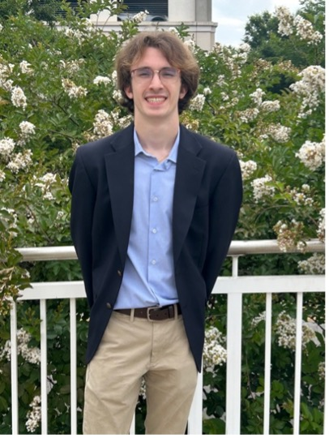
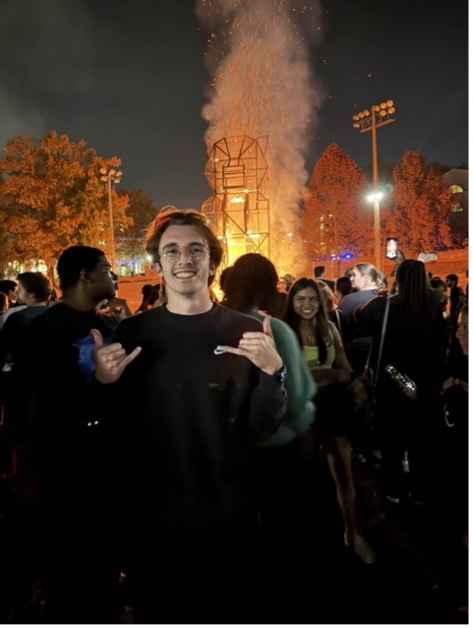
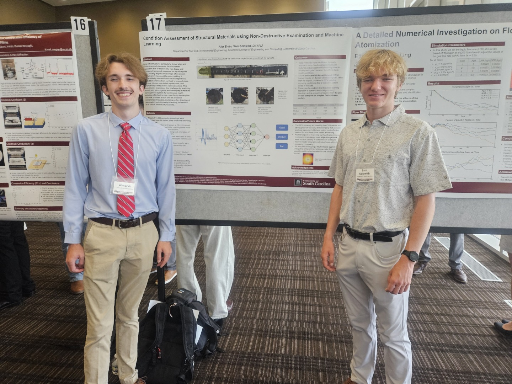

Who Am I?
My name is Alexander Ervin; I am a senior at the University of South Carolina majoring in Computer Information Systems. I will be graduating in May 2026 with Leadership Distinction in Research. My time at UofSC has not only helped me develop my academic/research portfolio, but it also widened my leadership potential and communication skills within and beyond the classroom setting. Ultimately, these experiences led me to find my passion within research and creating measurable positive change within my academic domain.
Following graduation, I am going to be pursuing a master’s degree and eventually a doctorate in Computer Science. Currently, my goal is to utilize these degrees to become a professor at a research institution such as UofSC. Particularly, I want to research ways to improve the ethics and trust aspects of modern computing practices. For example, researching ways to make Artificial Intelligence safer for users, less biased, and more beneficial to the average person. Despite the glamour and publicity given to companies creating AI Models (OpenAI, Google, Anthropic, etc.), there is a growing concern onto the ethics, interpretability, and robustness of these models. Specifically, how can we guarantee that these models are aligned to our understanding of good values, and how can we know that isn’t properly learning the patterns we wish it to. All these questions are ones I think about often and hope to answer in my research career. One day I hope to not only output meaningful research to the academic community, but to also serve as an advocate and mentor for the next generation of researchers, thinkers, and creatives.
At the beginning of my time at UofSC, I wished to simply get through the years required, not being concerned with extracurriculars, pursuing academic satisfaction, or anything like that. I simply wanted to do well enough to pass and eventually graduate. Despite this predisposition, I found myself becoming more ambitious, motivated, and social as time passed. In my second year, I reached out to a professor regarding research, opening a door to a research opportunity that is still happening to this day. Additionally, having the opportunity to present my research at the Summer Symposium showed me that I didn’t just enjoy doing research as a job, but I had become fully engrossed in the subject, breaking ground on topics that very few have touched. Additionally, in my second year I became involved with the Gamecock Cyber Club, having weekly presentations discussing cyber-related topics to a diverse audience of students. UofSC has not just been the institution in which I gained the necessary skills for my future career, but it served as a cultivator for me to become more confident, expressive, and ambitious.



Research Pathway Overview
The Research Pathway within the Graduation with Leadership Distinction (GLD) program focuses on highlighting experiences within research and within/beyond the classroom during my time at the University of South Carolina. Also found in this portfolio is my leadership section ‘Lineage, a tool for artists in an age of AI Generated “art”’. This section highlights the problem plaguing many artists and digital creators. AI corporations often train their models on all available data (images, text, music, etc.) even if it is not allowed. As a result, the models that the corporation creates will have a massive catalogue of skills and reference material when generating content whereas the artists on which the models are trained on have no way to get reimbursed or justice.
Importance of Building a Strong Academic Foundation
How foundational concepts in algorithms shaped the way I teach, learn, and approach research.
Concerns and Risks in Artificial Intelligence
How coursework and research revealed the ethical stakes of interpretable, trustworthy AI.
Value of Disseminating Knowledge
Why sharing technical knowledge with diverse audiences is essential to a field's growth.
Lineage: A Tool for Artists in an Age of AI-Generated Art
A pilot program helping digital artists detect unauthorized use of their work in generative AI models.